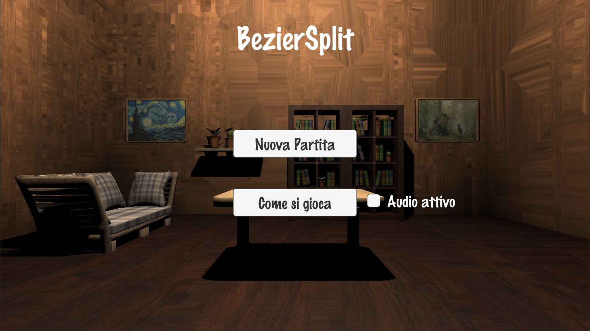
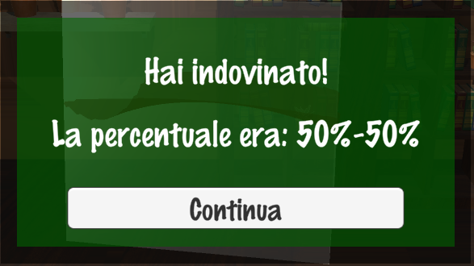
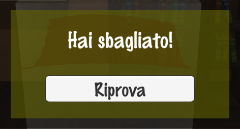
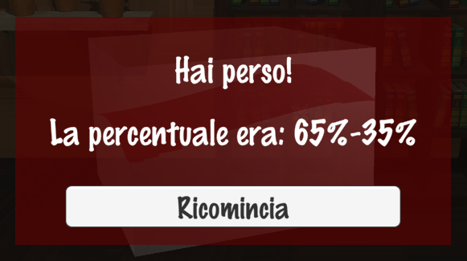
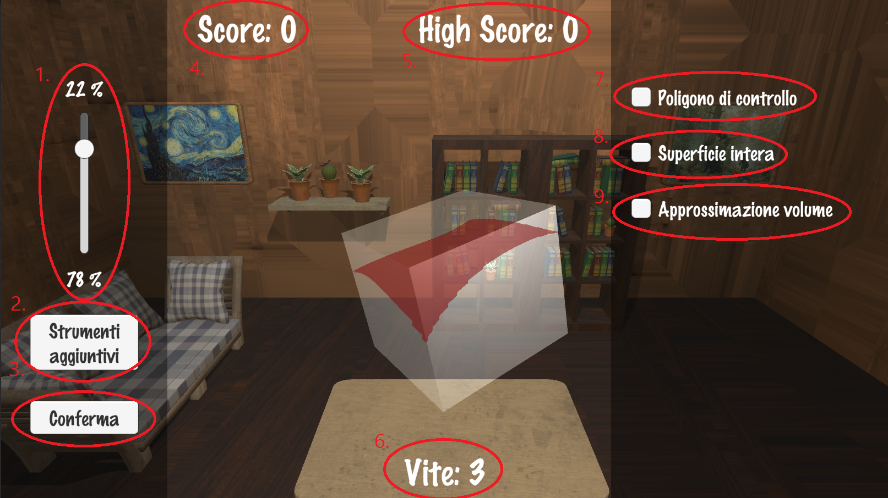

Manuale Utente
Scopo del Gioco
In BézierSplit, il giocatore si troverà di fronte ad un parallelepipedo suddiviso in due da una superficie di Bézier, e dovrà cercare di
indovinare il punto in cui tale suddivisione avviene descrivendo quanta percentuale del volume complessivo del parallelepipedo sia presente nella
parte sopra e quale nella parte sotto (una ovviamente implica direttamente l'altra).

Come si Gioca
Un solido suddiviso in due parti, dà luogo a due volumi distinti, ecco quindi che per procedere all'inserimento della risposta il giocatore avrà
a disposizione uno slider (un componente grafico verticale con il quale si può impostare un valore muovendo un indicatore) che
permetterà di localizzare con precisione la ripartizione del volume nelle due parti corrispondenti tramite click sinistro del mouse e
trascinamento.
Nota: Le soluzioni opposte sono considerate equivalenti (es. 40%-60% è cosiderata uguale a 60%-40%)
Per poter analizzare meglio il solido prima di fornire una risposta, il giocatore può ruotare a piacimento la figura tramite click sinistro
del mouse e trascinamento in un punto qualsiasi della schermata di gioco, inoltre, cliccando sul pulsante "Strumenti Aggiuntivi", si
aprirà una finestra con delle opzioni di analisi aggiuntive che possono essere attivate o disattivate a piacimento. Tali opzioni sono:
- Poligono di controllo: Per visualizzare graficamente il poligono di controllo della superficie di Bézier generata;
- Superficie intera: Per visualizzare una versione estesa della superficie presente nel solido;
- Approssimazione volume: Per colorare una delle due parti in cui il solido è stato suddiviso, evidenziandone il volume.
Durante il gioco è possibile premere il tasto esc della tastiera per visualizzare un menù da cui il giocatore può tornare alla schermata principale del gioco (Attenzione: tornare al menù principale del gioco comporta la perdita dei progressi correnti).
Punteggio e Difficoltà
Durante una partita, viene considerata corretta una suddivisione di volume con un certo grado di approssimazione (inizialmente 5%), ciò significa
che a fronte di una superficie suddivisa 40%-60% vengono accettate anche suddivisioni del tipo 45%-55% e 35%-65%. Per ogni risposta corretta il
giocatore guadagnerà un punto e passerà al livello successivo, dove verrà generata (proceduralmente) una nuova superficie contenuta in un nuovo
parallelepipedo. Ogni 5 risposte corrette (corrispondenti a 5 punti) la difficoltà del gioco aumenterà, proponendo al giocatore superfici sempre
più complesse in solidi più allungati e con un'approssimazione tollerata sempre minore (la difficoltà massima viene raggiunta dal livello 15 in
poi).
Più nello specifico, le difficoltà del gioco si suddividono in:
- Facile (livelli 0-4): I primi livelli del gioco, con superfici di bassa complessità e un tasso di tolleranza sugli errori del 5%;
- Medio (livelli 5-9): La difficoltà standard del gioco, con superfici di media complessità e un tasso di tolleranza sugli errori del 3%;
- Difficile (livelli 10-14): Una difficoltà avanzata del gioco, con superfici di discreta complessità e un tasso di tolleranza sugli errori del 2%;
- Impossibile (livelli 15+): La massima difficoltà del gioco, con superfici di alta complessità e un tasso di tolleranza sugli errori del 1%.
Se viene inserita una suddivisione errata, il giocatore perderà una vita (3 disponibili durante l'intera sessione) e potrà riprovare ad
indovinare la suddivisione del solido corrente, tuttavia, una volta esaurite le vite disponibili, l'errore portera al "Game Over", con conseguente
azzeramento del punteggio corrente e della difficoltà.



Nota: Verrà comunque memorizzato il valore di punteggio della sessione di gioco migliore.
L'Interfaccia di Gioco
Segue una descrizione dettagliata dell'interfaccia di gioco:

- Slider di inserimento: Le due percentuali sopra e sotto indicano la suddivisione attuale fornita dal giocatore, per aggiustare tali valori è sufficiente muovere verso l'alto o verso il basso la sfera centrale;
- Pulsante "Strumenti aggiuntivi": Permette di attivare (o disattivare, se nuovamente premuto) la finestra contenente le opzioni avanzate di visualizzazione (vedi punti 7-8-9);
- Pulsante "Conferma": Per confermare la suddivisione fornita con lo slider e passare (eventualmente) al livello successivo
- Testo "Score": Il punteggio della partita corrente
- Testo "High Score": Il punteggio massimo raggiunto nella sessione di gioco corrente
- Testo "Vite": Visualizza il numero di "vite" rimanenti, gli errori che separano dal "Game Over"
- Pulsante "Poligono di controllo": Per visualizzare o meno il poligono di controllo della superficie
- Pulsante "Superficie intera": Per visualizzare o meno un'estensione della superficie
- Pulsante "Approssimazione volume": Per visualizzare o meno con maggiore chiarezza uno dei due volumi
Home | Teoria | Manuale Utente | Gioco